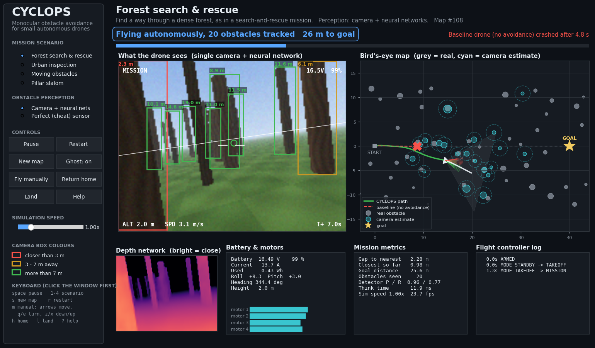
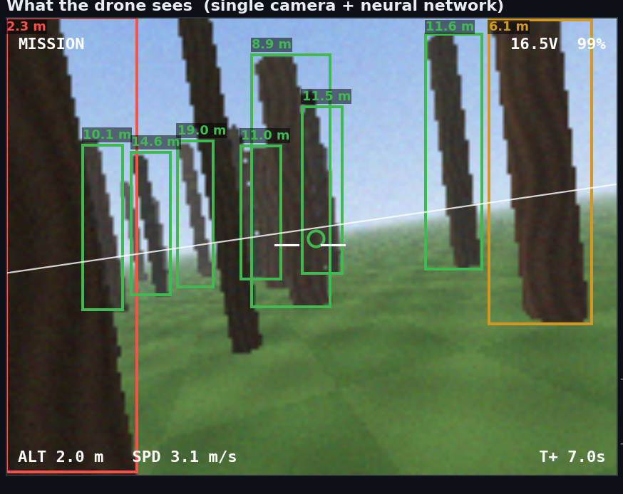
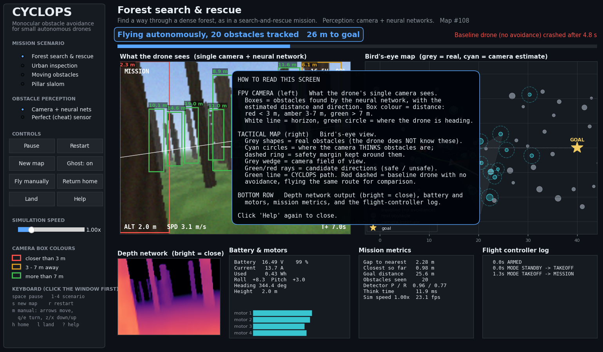
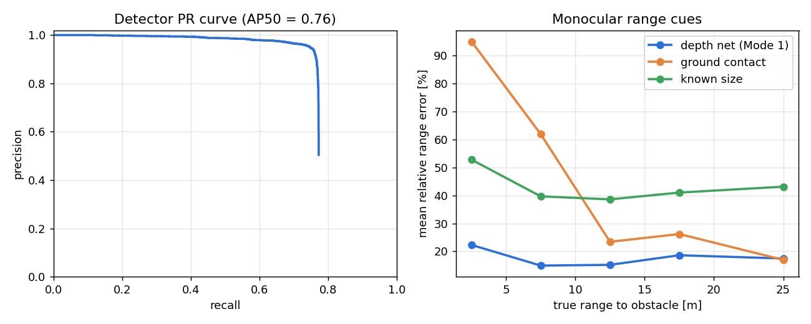

| Source code (GitHub) | https://github.com/ac265640/CYCLOPS |
| Project website (live) | https://ac265640.github.io/CYCLOPS/ |
| Demo videos | https://ac265640.github.io/CYCLOPS/#demo |
| This report (PDF) | https://ac265640.github.io/CYCLOPS/report/CYCLOPS_Project_Report.pdf |
| Raw results (CSV / JSON) | https://github.com/ac265640/CYCLOPS/tree/main/results |
| Syllabus mapping | https://github.com/ac265640/CYCLOPS/blob/main/docs/curriculum_mapping.md |
| ROS 2 package | https://github.com/ac265640/CYCLOPS/tree/main/ros2_ws/src/cyclops_ros |
| Reference paper (IEEE) | https://doi.org/10.1109/ICUAS48674.2020.9213901 |
This report describes the implementation of CYCLOPS (Camera-only, Yaw-aware Collision avoidance with Learned Obstacle Perception for Small UAVs), the project proposed in the initial report. A simulated quadrotor carries one forward-facing camera, with no LiDAR and no stereo. A lightweight convolutional detector finds obstacles in each frame, and a monocular depth network estimates their distance. An extended Kalman filter tracks every obstacle, using the reference paper's range-and-bearing (Mode 1) or bearing-only (Mode 2) localisation. A field-of-view-aware potential-field planner then steers the vehicle through a PX4-style flight controller acting on a full 6-DOF quadrotor model.
Across 160 simulated missions on unseen maps, CYCLOPS reached the goal in 90 % of flights in every scenario. A straight-line baseline managed 0 %, a classic potential field using the same perception 60 %, and perfect perception 97.5 %. The detector reaches 0.93 precision and 0.76 recall, the learned range error is 17 %, and one camera frame is turned into a flight command in 11 ms on a laptop CPU. The project also covers the course syllabus directly: airframe and battery modelling, flight modes and preflight checks, a stability analysis, and an endurance study.
The project builds on Z. Zhang, Y. Zhang and Y. Cao, "Monocular Vision-Based Obstacle Avoidance Trajectory Planning for Unmanned Aerial Vehicles", ICUAS 2020, pp. 627–632. The paper's key idea is that avoidance must be planned around what a single camera can actually measure. A monocular camera gives direction precisely but distance only indirectly. The paper therefore defines a range-based localisation mode and an angle-based one, and studies when the latter is observable.
The objective set in the initial report was a software pipeline with these parts:
All five parts are implemented and evaluated below.
The system is written in Python (NumPy, SciPy, PyTorch, Matplotlib). It is organised as independent modules that mirror the ROS 2 nodes proposed in the initial report:
Every component was built from scratch for this project:

The vehicle is a full rigid-body model, the Python equivalent of a Simulink plant block. Each propeller produces thrust Ti = kfωi2 and drag torque Qi = kmTi. Rotor speed follows the ESC command through a first-order lag.
The LiPo battery model includes an open-circuit-voltage curve, internal-resistance voltage sag and coulomb counting. Motor speed is limited by the present pack voltage, so the drone loses thrust as the battery drains. The IMU, GPS and barometer have realistic noise and bias, and a Kalman filter fuses them into a position and velocity estimate.
| Parameter | Value | Parameter | Value |
|---|---|---|---|
| Mass (incl. battery) | 1.5 kg | Airframe / arm length | Quad-X / 0.25 m |
| Inertia (Ixx, Iyy, Izz) | 0.029, 0.029, 0.055 kg·m² | Propellers | 10 inch, kf = 8.55×10-6 |
| Motor/ESC time constant | 30 ms | Thrust-to-weight | 2.8 |
| Battery | 4S LiPo 5000 mAh, 20 mΩ | Sensors | IMU 200 Hz, GPS 10 Hz, baro |
| Camera | 160×120 px, 90° HFOV, 15 Hz | Physics / control rate | 200 Hz |
The controller follows the PX4 multicopter cascade:
The attitude error uses PX4's reduced-attitude method, which gives tilt priority over yaw. An early version with a plain geometric attitude error lost velocity control during fast heading changes, and this method fixed it.
A commander implements arming, a preflight checklist and flight modes. The checklist covers battery voltage and charge, IMU health, level attitude, GPS fix, estimator convergence, thrust-to-weight and camera/perception readiness. The flight modes follow PX4 naming:
A low-battery failsafe triggers RTL automatically.
The onboard camera is a vectorised ray-casting renderer (pinhole model) with lighting, fog, textures and sensor noise. Alongside the RGB image it outputs exact depth and an instance mask, so every training image is labelled automatically: no manual annotation was needed. The dataset was built in two parts:


| Network | Design | Parameters | CPU time |
|---|---|---|---|
| Obstacle detector | CenterNet-style, anchor-free: depthwise-separable encoder with a feature-pyramid decoder, and heat-map, box-size and offset heads at stride 4. Trained with focal loss. | 225,637 | 1.4 ms |
| MonoDepthNet | U-Net with the same encoder, regressing bounded metric log-depth. Loss: L1 + scale-invariant + gradient matching. | 264,513 | 2.0 ms |
Training ran on the laptop GPU (Apple MPS) in two stages: 30 epochs on the main set, then a 12-epoch fine-tune with the close-range examples. Augmentation included brightness/contrast changes and horizontal flips. Both networks are small enough for a Raspberry Pi or Jetson-class companion computer.
Bearing. For each detection, the azimuth and elevation follow exactly from the box centre and the camera intrinsics.
Range. Three monocular range cues are computed, echoing the paper's localisation modes:
Confidence. A range confidence is computed as the fraction of box pixels whose predicted depth agrees with the estimate. The tracker then uses one of two update modes:
Wide obstacles. Obstacles wider than 2 m, such as buildings, are split into roughly 1 m image columns, each with its own learned depth (the "stixel" idea). The planner then sees their real outline and corners.
Each obstacle is tracked by an extended Kalman filter in world coordinates, with a constant-velocity model and the measurement vector [azimuth, elevation, range]. Each frame goes through these steps:
Moving obstacles are extrapolated 1.5–2 s ahead by the planner. Every obstacle is inflated by its estimated position uncertainty, so the avoidance is planned around what the camera really knows.
The proposal named artificial-potential-field (APF) and vector-field-histogram (VFH) style planners. A classic APF was implemented first, but it reacts only to the current force. With a forward camera, a 0.4 s velocity response and noisy range, it oscillated between obstacles and drifted sideways into space the camera had never seen.
The final APF-rollout planner fixes this by testing candidate moves before committing to one:
Two rules handle dead ends:
Because candidates stay inside the field of view, the drone never flies into space it has not looked at. This is the monocular limitation designed into the planner.
The dashboard runs the complete loop in real time, at about 16 frames per second on a laptop. It shows:
Clickable controls select the scenario and perception mode, pause and restart, generate a new map, switch to manual RC flight, return home and land. A Help overlay explains every panel.


A ROS 2 package (cyclops_ros) wraps the same perception, tracker and planner code in two nodes:
The package also handles NED/FRD frame conversion and includes a launch file for the Gazebo
x500_mono_cam airframe.
Four scenarios represent the application areas of Syllabus Module 6. Each is a 40 m mission at 2 m altitude:
Four methods were compared on 10 maps per scenario. The maps were never used during development, giving 160 missions in total:
A mission succeeds if the drone reaches within 1 m of the goal without touching an obstacle within 60 s. The metrics are those listed in Section 8.6 of the initial report:
| Metric | All obstacles (≤ 30 m) | Near obstacles (≤ 15 m) |
|---|---|---|
| Detection precision / recall (IoU 0.5) | 0.93 / 0.76 | 0.92 / 0.86 |
| F1 score / AP@0.5 | 0.84 / 0.76 | 0.89 / 0.87 |
| Depth map: AbsRel / RMSE / δ<1.25 | 0.088 / 1.56 m / 0.92 | |
| Range cue (relative error) | 0–5 m | 5–10 m | 10–15 m | 15–20 m | 20–30 m | Overall |
|---|---|---|---|---|---|---|
| Learned depth network (Mode 1) | 22.7 % | 15.5 % | 15.3 % | 18.5 % | 17.3 % | 17.2 % |
| Flat-ground contact geometry | 87.6 % | 53.3 % | 21.0 % | 24.1 % | 16.7 % | 35.2 % |
| Known-size heuristic | 54.3 % | 45.3 % | 44.6 % | 46.2 % | 48.9 % | 47.3 % |
The learned depth is the only cue that stays accurate at close range, where it matters most. The ground-contact cue fails up close because the bottom of a nearby obstacle leaves the image.


| Method | Success | Collision | Timeout | Mean min. clearance | Mission time | Energy |
|---|---|---|---|---|---|---|
| Baseline (straight line, no avoidance) | 0 % | 100 % | 0 % | – | – | – |
| Classic APF + our vision | 60 % | 40 % | 0 % | 0.40 m | 18.1 s | 1.24 Wh |
| CYCLOPS (APF-rollout + vision) | 90 % | 7.5 % | 2.5 % | 0.68 m | 25.4 s | 1.66 Wh |
| Oracle perception (upper bound) | 97.5 % | 0 % | 2.5 % | 0.71 m | 20.8 s | 1.36 Wh |
| Success rate per scenario | Forest SAR | Urban | Dynamic | Pillars |
|---|---|---|---|---|
| Baseline | 0 % | 0 % | 0 % | 0 % |
| Classic APF + vision | 40 % | 70 % | 50 % | 80 % |
| CYCLOPS | 90 % | 90 % | 90 % | 90 % |
| Oracle perception | 100 % | 90 % | 100 % | 100 % |
The gap between CYCLOPS and the oracle is the cost of seeing with one camera: only 7.5 percentage points. The gap between CYCLOPS and the classic APF, which uses identical perception, is the benefit of the rollout planner: 30 points. CYCLOPS takes longer missions (25 s against 21 s for the oracle) because it slows down and re-plans when distance estimates are uncertain, a deliberate trade of speed for safety.
Altitude was held to 4 cm RMSE. The cross-track deviation from the straight line (3.9 m) reflects the detours needed around obstacles, not tracking error.


Network inference takes 3.4 ms per frame on the CPU (detector 1.4 ms + depth 2.0 ms). The complete chain from camera frame to velocity command averages 11.4 ms, with a 95th percentile of 23.6 ms. This covers perception, localisation, tracking and planning, and is well inside the 66 ms budget of a 15 Hz camera.
Open loop. Linearising the 6-DOF model at hover gives six eigenvalues at exactly zero, with the others only slightly negative (from drag). The bare airframe is therefore neutrally stable: there is no natural restoring moment in roll, pitch or yaw. All static and dynamic stability must come from the feedback controller.
Closed loop. The full rank of the controllability matrix confirms the four rotors can control all 12 states. The tables and figures below give the closed-loop results.
| Axis / test | Result |
|---|---|
| Roll (lateral) and pitch (longitudinal) 10° step | rise time 0.23 s, overshoot 0.2 %, 5 % settling 0.33 s |
| Yaw (directional) 45° step | rise time 0.67 s, overshoot 1.7 %, settling 1.08 s |
| Altitude +1 m step | rise time 1.31 s, no overshoot, settling 1.86 s |
| Gust: 6 N horizontal push for 0.5 s | peak deviation 0.74 m, back within 10 cm after 3.5 s |
| Roll rate loop / attitude loop | phase margin 72° / 68°, gain margin ∞ / 18.5 dB, crossover 14.7 / 6.0 rad/s |
| Yaw rate loop / attitude loop | phase margin 78° / 67°, gain margin ∞ / 22.2 dB |
| Stability boundary | roll loop unstable only for attitude gain > 50.6 (design value 6: 8.4× margin) |


The 10-inch propellers give a disc loading of 72.6 N/m². Hover power is 80 W in ideal momentum theory, 178 W with a figure of merit of 0.65 and losses, and 214 W measured on the simulator.
Forward-flight momentum theory, with Glauert's induced velocity and parasite drag, shows the classic "bucket" curve:
Bigger batteries show diminishing returns: doubling capacity from 5 to 10 Ah raises hover time by only about 33 %, because the extra cells must also be lifted.

| Module | Where it appears in CYCLOPS |
|---|---|
| 1 – Introduction (types, airframe, batteries, motors, ESC, propellers) | Quad-X airframe, propeller thrust/torque model, motor/ESC lag, LiPo battery with voltage sag (Sec. 5.1, 9) |
| 2 – Design fundamentals (flight controllers, RC, FPV, telemetry) | PX4-style cascaded flight controller, RC stick model with manual flight, FPV view with OSD, telemetry panel (Sec. 5.2, 5.8) |
| 3 – Drone basics (preflight, flight modes, roll/pitch/yaw, GPS autopilot, intelligent modes) | Preflight checklist, MANUAL/ALTCTL/POSCTL/TAKEOFF/MISSION/RTL/LAND, low-battery failsafe (Sec. 5.2) |
| 4 – Modelling and control | 6-DOF Newton–Euler model, sensor models and Kalman filter (Sec. 5.1) |
| 5 – Stability and control | Open-loop eigenvalues, Bode margins, root locus, roll/pitch/yaw step responses, gust rejection (Sec. 8) |
| 6 – Applications | Search-and-rescue forest, urban infrastructure inspection, dynamic obstacles, slalom (Sec. 6) |
| 7 – Expanding drone abilities (camera, FPV, sensors, speed, flight time) | Monocular camera with deep perception; speed and battery-capacity endurance study (Sec. 5.3–5.5, 9) |
git clone https://github.com/ac265640/CYCLOPS.git cd CYCLOPS python3 -m venv .venv && source .venv/bin/activate pip install -r requirements.txt python scripts/live_demo.py # live demo (trained weights included) python scripts/benchmark.py --seeds 10 # reproduce the benchmark python scripts/stability_analysis.py # Module 5 analysis python scripts/endurance_analysis.py # Modules 1 and 7 analysis python -m pytest -q # 8 unit / integration tests
The project set out to show that a quadrotor can avoid obstacles using only one camera, if the avoidance is planned around what that camera can actually measure. CYCLOPS implements this idea end to end:
With 90 % mission success against 0 % for the baseline, within 7.5 points of perfect perception, and 11 ms latency, the pipeline meets the objectives of the initial report. The code, results, videos and this report are publicly available at the links in Section 1.